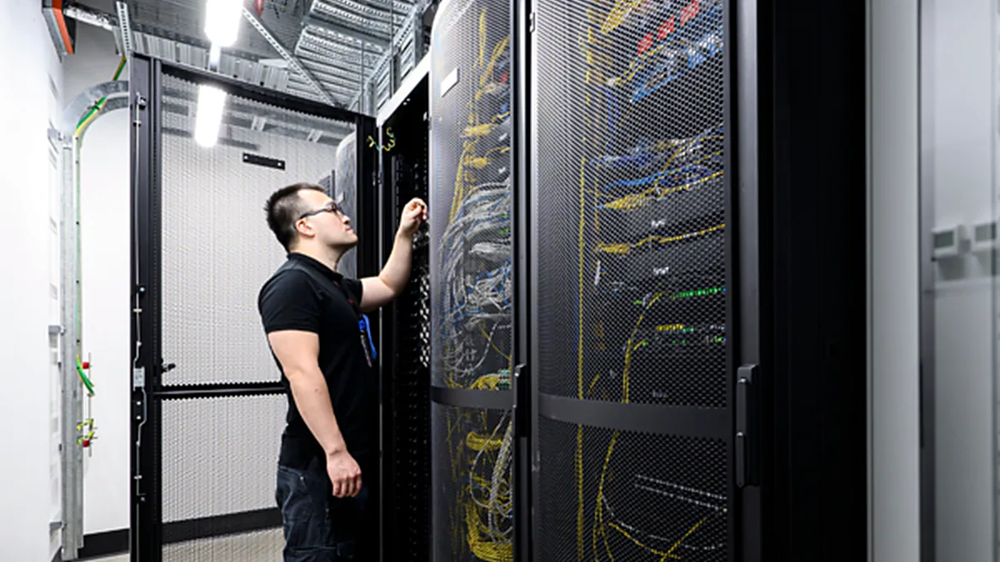
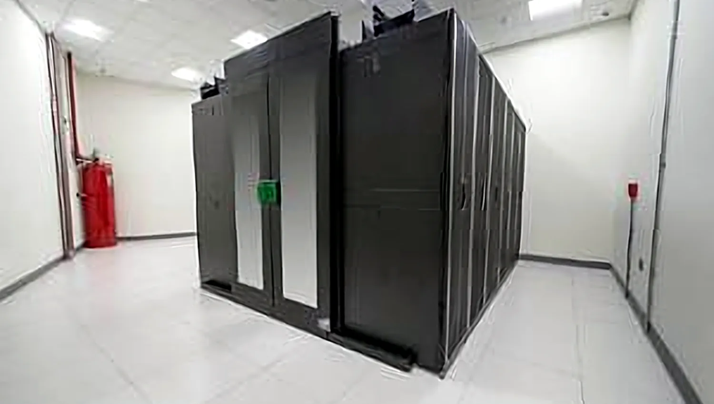
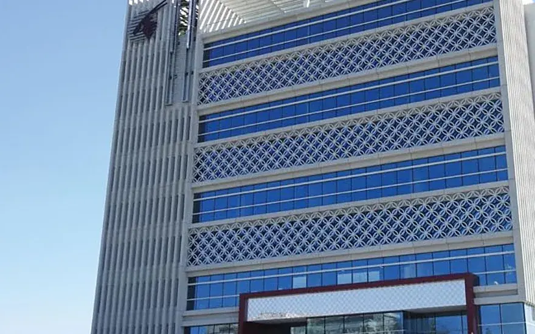
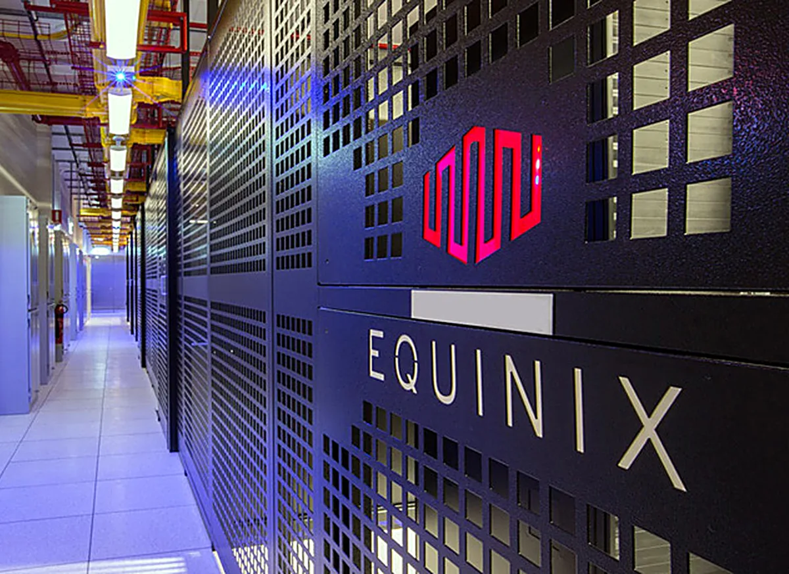
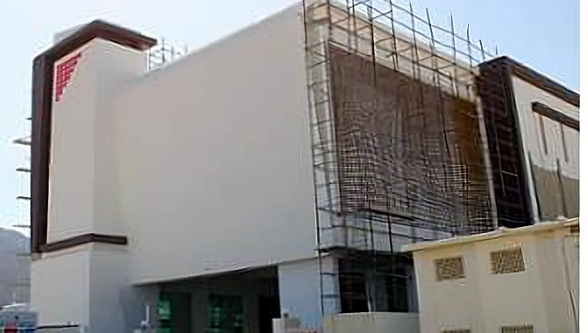

Electrical
Power & Redundancy
MV and LV distribution, switchgear, UPS and static transfer, generator connection, busway and rack-level distribution — built to the facility's redundancy topology.
Power, precision cooling and monitoring for colocation, enterprise and carrier-landing facilities — including works executed inside live halls with tenant equipment in service.
Scope of works
A data centre fails at its weakest dependency — usually an interface between two packages. We carry the electrical chain, the thermal chain and the monitoring layer as one system.
MV and LV distribution, switchgear, UPS and static transfer, generator connection, busway and rack-level distribution — built to the facility's redundancy topology.

CRAC and CRAH deployment, chilled water to the hall, hot and cold aisle containment and airflow management.

Branch-circuit monitoring, rack and aisle sensing, and integration into DCIM, EPMS and BMS — so capacity is managed on data, not assumption.

Very early smoke detection, gaseous suppression interfaces and leak detection under raised floors and chilled water routes.
Rack deployment, aisle and overhead containment, structured cabling and fibre pathways, coordinated with the tenant fit-out.

Factory acceptance, site acceptance and integrated systems testing — load-bank verified, failure modes simulated.
Commissioned with INTU ↗Delivered

MEP delivered inside operating halls without a single service interruption.

Recognised with an official appreciation certificate from the client.
Topology
Concurrent maintainability is a design decision, not a maintenance promise. Either path can be worked on with the load still running.
Operating discipline
Delivering inside an operating hall — where one wrong isolation costs an SLA penalty — is a different discipline. It is the one we are known for.
Technical questions
We deliver to the design intent set by the facility owner and their consultant — commonly Uptime Institute tier objectives and TIA-942 infrastructure classification. Executed topologies include N+1 and N+N electrical and mechanical configurations with concurrent maintainability as a design requirement rather than an afterthought.
Through phasing plans agreed with facility operations, work executed under the operator's permit and change-control regime, physical containment against dust and vibration, and sequencing that never reduces redundancy below the agreed threshold. Every activity has a defined rollback position before it starts.
Staged commissioning through factory acceptance testing, site acceptance testing, and integrated systems testing. IST includes load-bank verification at design load and failure-mode simulation — utility loss, generator start, UPS transfer and cooling failure — so the facility is proven under fault conditions before energisation for live load.
Through airflow management rather than raw tonnage. We assess rack-level heat rejection, containment strategy and supply-air temperature policy together, because oversupplying cold air into an uncontained hall wastes energy without solving hotspots. Where densities vary across the hall, cooling is zoned accordingly.
Yes. Branch-circuit and environmental monitoring is delivered with the point schedule and protocol required by the client's existing platform. Where no platform exists, we can propose and integrate one, with the monitoring architecture designed for the facility's eventual capacity rather than only its first phase.
Whether it is a new build, a capacity expansion or works inside a live hall, send us the design intent and we will respond with a technical approach and delivery position.